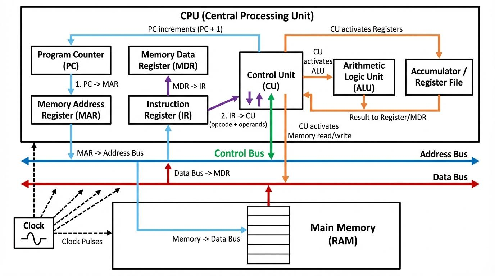

I registri sono piccole aree di memoria molto veloci situate all'interno del processore. Servono a conservare temporaneamente dati, indirizzi e risultati delle operazioni che la CPU deve eseguire.
Ogni processore possiede diversi registri, ognuno con funzioni specifiche. Alcuni vengono utilizzati per effettuare calcoli, altri per gestire gli indirizzi della memoria o controllare l'esecuzione del programma.
Per esempio, nell'architettura x86 a 16 bit troviamo registri come:La RAM è la memoria principale del computer e permette di conservare temporaneamente i dati e le istruzioni dei programmi in esecuzione. A differenza dei registri, la RAM può contenere una quantità molto maggiore di informazioni, ma è generalmente più lenta. L'Assembly permette di leggere e modificare i dati presenti in memoria attraverso apposite istruzioni.
Un'altra componente importante è lo Stack, una zona di memoria utilizzata per conservare temporaneamente informazioni durante l'esecuzione di un programma. Viene utilizzato, per esempio, per salvare gli indirizzi di ritorno delle funzioni e alcuni dati temporanei.
Le principali istruzioni utilizzate per gestire lo Stack sono: